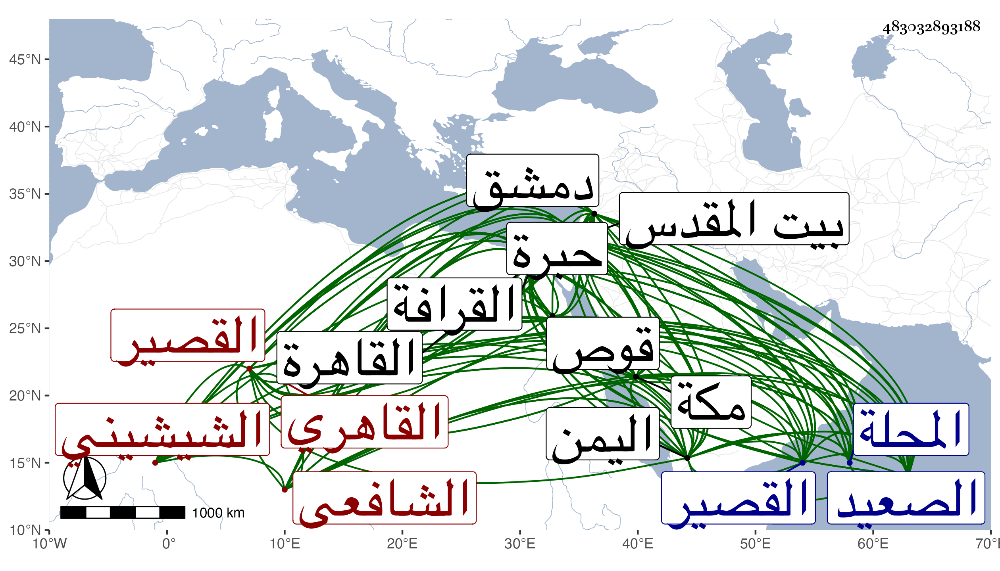

0902Sakhawi.DawLamic.ITO20230111-ara1.EIS1600.483032893188
Biography ID: 483032893188
712
محمد بن عمر بن محمد بن وجيه بن مخلوف بن صالح بن جبريل بن عبد الله القطب أبو البركات بن السراج بن الجمال بن الوجيه الشيشيني القاهري الشافعي ابن أخت النور علي بن عبد الرحمن الهوريني ووالد أحمد الماضيين بل لولده ذكر في تاريخي الكبير . ولد في العشر الأخير من المحرم سنة ثلاث وستين وسبعمائة بشيشين الكوم بمعجمتين مسكورتين بعد كل منهما تحتانية من أعمال المحلة بينهما قدر نصف يوم ونشأ بها فحفظ بعض القرآن ثم انتقل صحبة أبيه إلى المحلة فأكمله وتحول بعد موته إلى القاهرة وذلك في سنة إحدى وتسعين فأقام عند عمه الفخر عثمان وتدرب به في الشروط وأخذ عنه الفرائض والحساب وحفظ عنده التنبيه وعرضه على البلقيني وابن الملقن وأجازا له واشتغل في الفقه على النور بن قبيلة وغيره وسمع من الزين العراقي من أماليه ومن الهيثمي وخاله الهوريني ومما سمعه عليه جل الشفا والشرف بن الكويك بل كان له به مزيد اختصاص بحيث أنه كتب معه حين سافر لدمشق إلى التاج بن الشريطي بالوصية عليه فبالغ في إكرامه في آخرين وتكسب بالشهادة وتنزل في صوفية الخانقاه القوصونية بالقرافة حين كان خاله شيخها وأسكن عياله هناك فلما مات خاله حولهم وحج مرارا منها مرة رافق فيها شيخنا واجتمع معه في اليمن بالمجد الفيروزابادي وجاور بضع سنين ومنها مرة من بلاد الصعيد ركب البحر من برية القصير بعد قوص ولقي بمكة التاج عبد الوهاب بن العفيف اليافعي وحمل عنه أشياء من تصانيف أبيه كروض الرياحين وغيرها مما كان هو الأصل في انتشارها بالقاهرة وعقد مجلس الوعظ باليمن ومكة وغيرهما وزار أيضا بيت المقدس والخليل وكان يحكي أنه ولي في بيت المقدس الحسبة بعناية الشهاب بن الهائم ، وكذا سافر لدمشق كما أشير إليه وللنغرين وغيرهما في التجارة وانتقع بآخرة مقتصرا على الشهادة بمركز ميدان القمح ثم ضعفت حركته عن المشي وغيره حتى كان كثيرا يقول :
| من يشتري مني عظيم الشوم | مكسر العظم صحيح البلعوم |
اجتمعت به كثيرا وسمعت كثيرا من فوائده وما جرياته ، وكان يحكي أن شخصا في قريتهم مات فيما يظهر للناس فجهزوه وأحضروه يوم الجمعة فلما تقدم الخطيب بعد صلاة الجمعة ليصلى عليه قام فجلس على النعش فخاف الخطيب منه وسقط واستمر مريضا حتى مات وعوفي ذلك الميت ، بل قرأت عليه منتقى من الشفا وتناولته منه ، وكان محبا في العلم لديه فضيلة ذا نظم متوسط بارعا في الفرائض والحساب جيد المحاضرة عظيم الاهتمام بالموافاة لأصحابه والتودد إليهم محبا في لقاء الصالحين راغبا في التبرك بآثارهم بحيث كانت عنده طاقية يذكر أنها لأبي بكر الشاذلي الصعيدي وسجادة للشهاب أحمد الزاهد مع كثرة العبادة والاحتياط في الطهارة ولكنه كان مقترا على نفسه مع مزيد ثروته وكونه يقصد للاقتراض منه فلا يمتنع من جلب ما يجره إليه القرض من أكل ونحوه ، وقد فتحت خلوته بالمنكوتمرية مرة واختلس له منها شيء فصبر . ومن نظمه :
| يا سيدي يا رسول الله خذ بيدي | وانظر بفضلك في أمري وفي ألمي |
إلى أن قال :
| جرائمي عظمت إجرامها ولقد | أربت على الراسيات الصم في العظم |
مات في أواخر رمضان سنة خمس وخمسين ودفن بتربة البيبرسية عند ولده وعمه عثمان . وهو من بيت كبير بالمحلة كان والده خليفة الحاكم بها كتب له التقي السبكي في عرضه للتنبيه عليه سنة سبع وعشرين سراج الدين بن القاضي الصدر الرئيس العدل الأمين ابن الحاج المرحوم وجيه الدين . وكذا وصف أبو حيان جده بالشيخ الفقيه العالم العدل الرضي رحمهم الله وإيانا .
